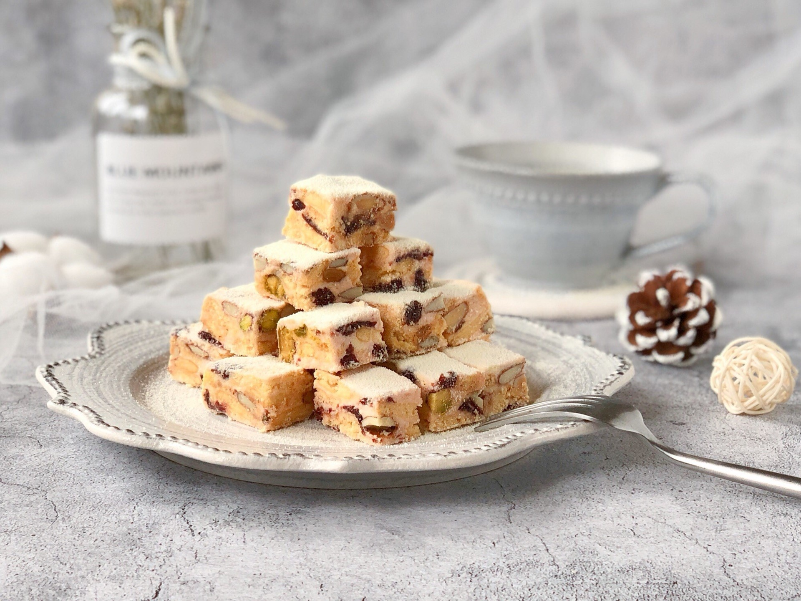
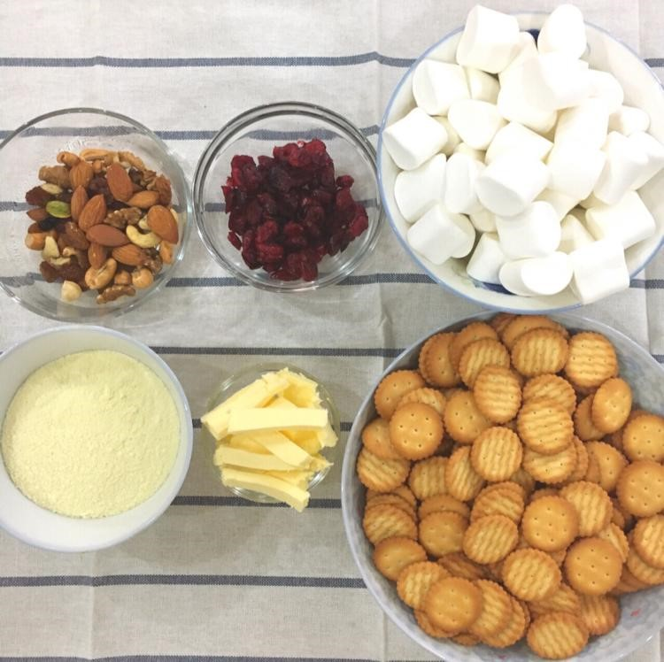
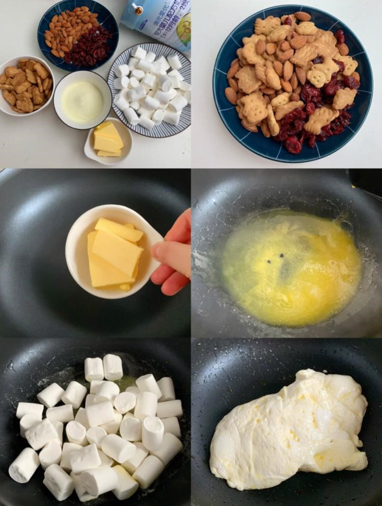
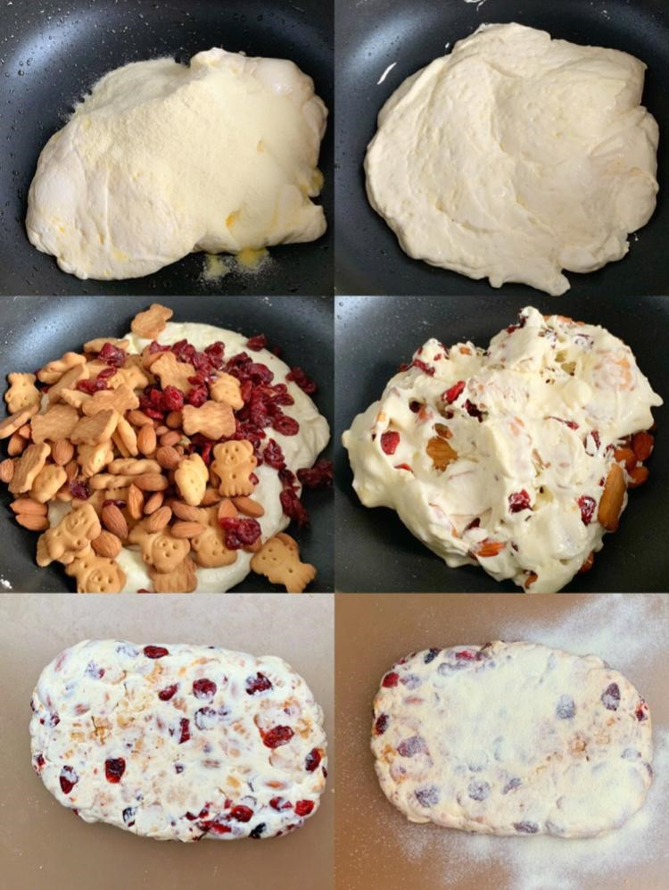
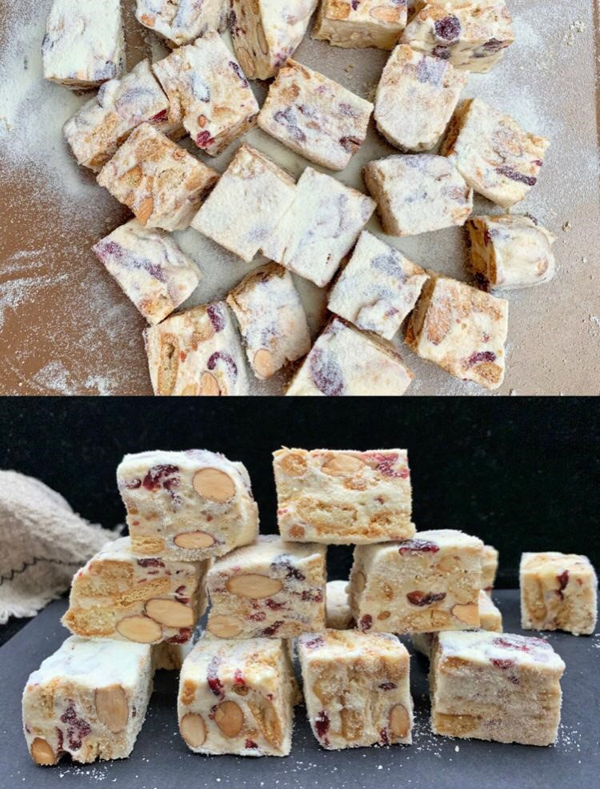

情人节将至，没有女生送，那就自己做...

食材：
牛油 50g
棉花糖 200g
果干（蔓越莓、提子干） 50g
坚果50g
奶粉 50g＋10g（裝飾用）
饼干 250g
制作方法：
1 用平底锅开细火加热锅底，放入牛油炒至融化
2 放入棉花糖继续炒，保持细火，若棉花糖太大颗可先前剪成细粒状
3 倒入奶粉炒20秒后熄火，继续炒至奶粉与棉花糖完全融合

4 倒入果干、果仁及饼干，并且与棉花糖搅拌和翻炒均匀
5 将搅拌均匀的雪花苏放在有牛油纸的铁盘上，将四边压整成方形，再在表面铺上一张牛油纸，用手或锅铲压平整
6 最后在雪花酥的表面撒上奶粉，多些奶粉才有雪花的感觉

7 冷却后，用刀切成自己喜欢的大小

大功告成！